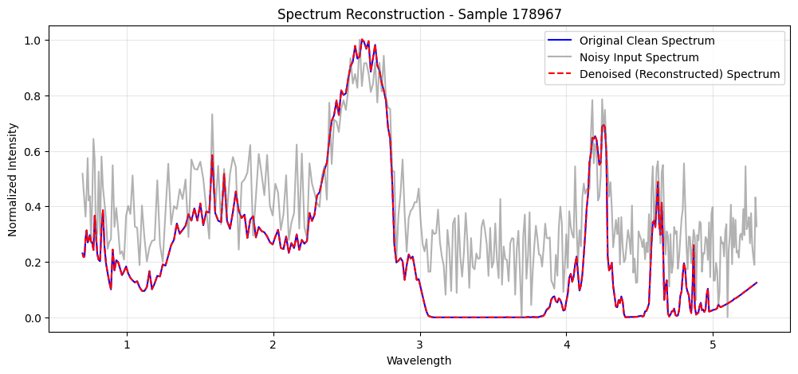
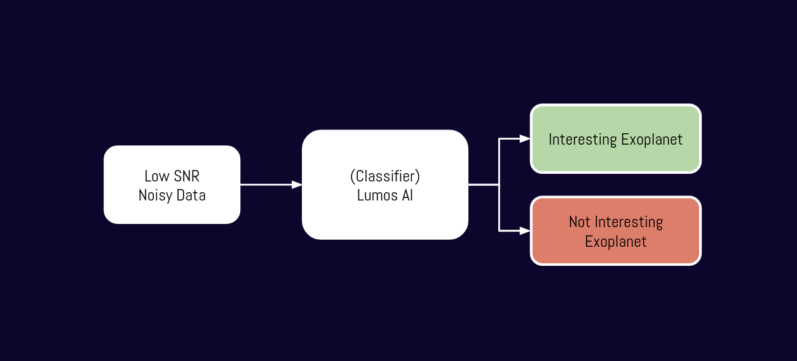
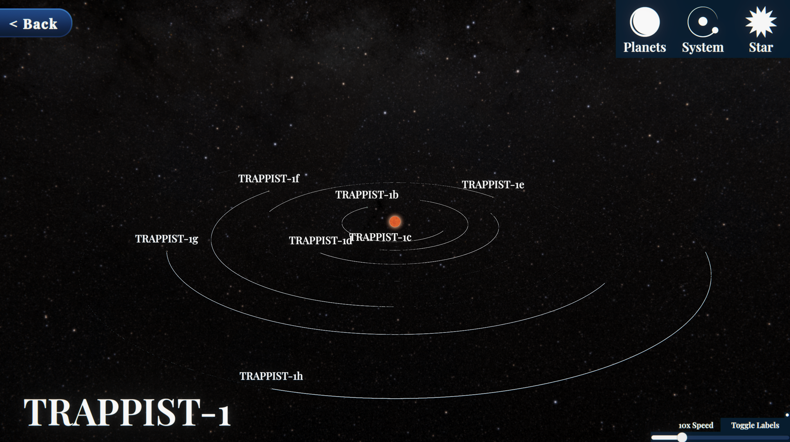

LUMOS
Accelerating the Search for Life with an AI-Driven Platform and Educational Game Interface
The Cosmic Haystack
Finding signs of life on distant exoplanets is like searching for a whisper in a cosmic storm. Data from powerful telescopes is often faint and buried in noise, making traditional analysis slow and impractical.
Signal vs. Reality
Our AI is trained to find the clean signal hidden within the noisy reality.

The AI Pipeline
We designed an end-to-end machine learning workflow to automatically process, clean, and classify atmospheric data from raw spectra to actionable insight.

Key Results
0.97
F1-Score achieved by the XGBoost model in identifying biosignatures.
Efficiency Gains
3.5x
Faster training speed with our GPU-accelerated XGBoost model compared to Random Forest.
The Lumos Experience
We didn't just analyze the data—we brought it to life. Explore the TRAPPIST-1 system in an interactive 3D environment and see the results of our AI's analysis for yourself.
